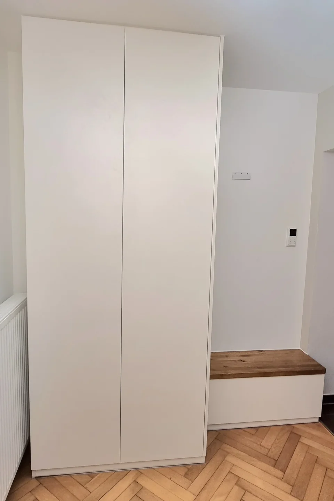
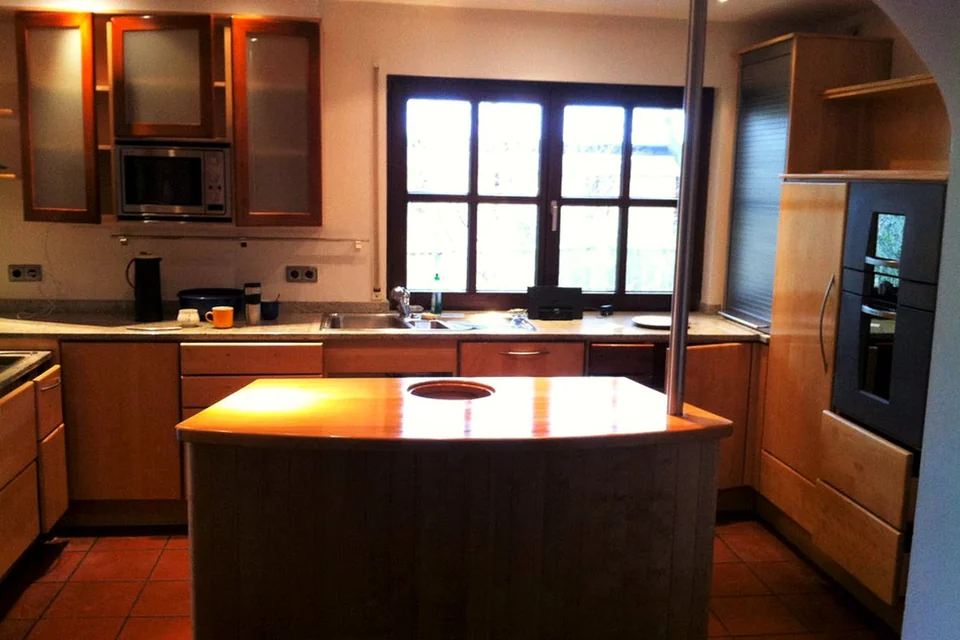
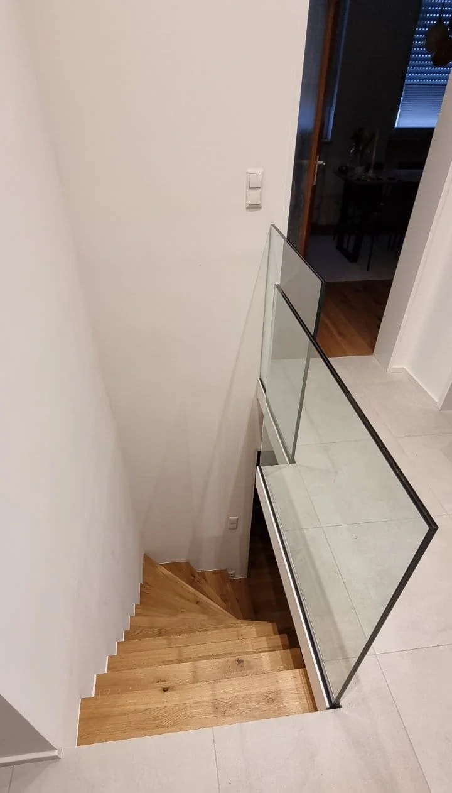

Einbaugarderobe
Stauraum und Sitzplatz in einer Flurnische.
Schreiner Werkstatt · München & Unterhaching
Maßmöbel, Einbauschränke, Küchen und Parkett. Persönlich geplant und vor Ort montiert.
Für eine erste Einschätzung genügen Fotos, grobe Maße und der Projektort.

Individuelle Möbel, die perfekt zu Ihrem Raum passen. Tische, Betten, Regale und mehr – alles nach Ihren Wünschen gefertigt.
Mehr erfahrenMaßgefertigte Einbauküchen und Schranklösungen, die Funktionalität und Ästhetik perfekt vereinen.
Mehr erfahrenParkettboden verlegen, schleifen und versiegeln – Massivparkett, Fertigparkett und Landhausdielen. Dazu Holzdecken, Wandverkleidungen und kompletter Innenausbau mit Holz.
Mehr erfahrenWertvolle Möbelstücke verdienen ein zweites Leben. Wir restaurieren und reparieren mit Sorgfalt und Expertise.
Mehr erfahrenHochwertige Holztreppen, individuell gefertigt. Von geraden Treppen bis zu geschwungenen Designs – handwerklich perfekt umgesetzt.
Mehr erfahrenWetterfeste Holzterrassen für Ihren Außenbereich. Mit oder ohne Überdachung – langlebig und natürlich schön.
Mehr erfahrenAuch kleine Arbeiten sauber gelöst
Für Reparaturen, Anpassungen, kleine Einbauten, Sockelleisten, Parkettstellen oder Holzdetails reichen oft ein paar Fotos, Maße und eine kurze Beschreibung. So können wir schnell einschätzen, ob ein Termin sinnvoll ist.

Stauraum und Sitzplatz in einer Flurnische.

Farblos lackierte Holzfronten und eine Kochinsel.

Eichenstufen und Glas für einen hellen Treppenbereich.
So läuft Ihr Schreinerprojekt ab
Ein klarer Ablauf macht die Entscheidung leichter und sorgt dafür, dass Budget, Material und Termin realistisch bleiben.
Sie schildern kurz Ihr Projekt: Maßmöbel, Einbauschrank, Küche, Parkett, Terrasse oder Innenausbau.
Wir prüfen Raum, Nutzung, Stil und technische Details direkt vor Ort im Großraum München.
Sie erhalten eine verständliche Lösung mit Materialvorschlag, Ausführung und transparenter Kalkulation.
Die Arbeit entsteht in der Werkstatt und wird sauber, passgenau und alltagstauglich montiert.
Die Werkstatt
Marios Karampas begleitet Ihr Projekt von der ersten Einschätzung bis zur Montage. Das Büro ist in Unterhaching, die Werkstatt in München.
Mehr über die WerkstattAntworten auf die wichtigsten Fragen rund um unsere Schreinerarbeiten
ef-sinn bietet ein breites Spektrum an Schreinerarbeiten in München und Unterhaching: Möbelbau nach Maß (Tische, Betten, Regale, Sideboards), Einbauküchen, Einbauschränke, Badmöbel, Parkettboden verlegen und schleifen, Holztreppen, Holzterrassen, Innenausbau (Holzdecken, Wandverkleidungen) sowie Möbelreparatur und Restaurierung.
Ja! Wir verlegen professionell Parkettböden in München und Umgebung. Wir arbeiten mit Massivparkett, Fertigparkett, Landhausdielen und Stabparkett. Zusätzlich bieten wir Parkettboden schleifen, ölen und versiegeln an – sowohl für Neuverlegung als auch für die Aufarbeitung bestehender Böden.
Absolut! Gerade Sonderwünsche und spezielle Anforderungen sind unsere Stärke. Ob ungewöhnliche Maße, besondere Holzarten, barrierefreie Lösungen, integrierte Technik oder ausgefallene Designs – jedes Projekt wird individuell nach Ihren Vorstellungen geplant und gefertigt.
Die Kosten für Maßmöbel hängen von Material, Größe, Komplexität und Oberflächenbehandlung ab. Wir erstellen für jedes Projekt ein individuelles und transparentes Angebot nach einem persönlichen Beratungsgespräch. Kontaktieren Sie uns unter info@ef-sinn.de oder +49 176 8718 6451.
Schreiner und Tischler bezeichnen denselben Beruf. In Bayern und Süddeutschland sagt man „Schreiner", in Nord- und Ostdeutschland „Tischler". Die Ausbildung, Fähigkeiten und Tätigkeiten sind identisch. ef-sinn in München ist Ihr Schreiner (bzw. Tischler) für maßgefertigte Holzarbeiten.
ef-sinn ist in München und Unterhaching ansässig und bedient Kunden in ganz München, Unterhaching, Taufkirchen, Ottobrunn, Neubiberg, Oberhaching, Grünwald, Pullach und dem Großraum München/Oberbayern.
Zuerst schildern Sie Ihr Projekt. Danach klären wir die Ausführung und die Maße, erstellen ein Angebot und stimmen Fertigung und Montage mit Ihnen ab.
Wir arbeiten mit einer Vielzahl hochwertiger Holzarten – Eiche, Buche, Esche, Nussbaum, Kirsche und viele mehr. Wir bevorzugen regionale und nachhaltig bewirtschaftete Hölzer und beraten Sie gerne zur idealen Holzwahl für Ihr Projekt.
Vor Ort in München & Unterhaching
ef-sinn arbeitet für Privatkunden, Architekten und Betriebe in München, Unterhaching und Umgebung. Für Ihre Anfahrt öffnen Sie die Adresse direkt in Google Maps – ohne Tracking-Karte auf der Seite.
Lassen Sie uns gemeinsam Ihre Ideen in handwerkliche Realität umsetzen.
Jetzt Kontakt aufnehmen